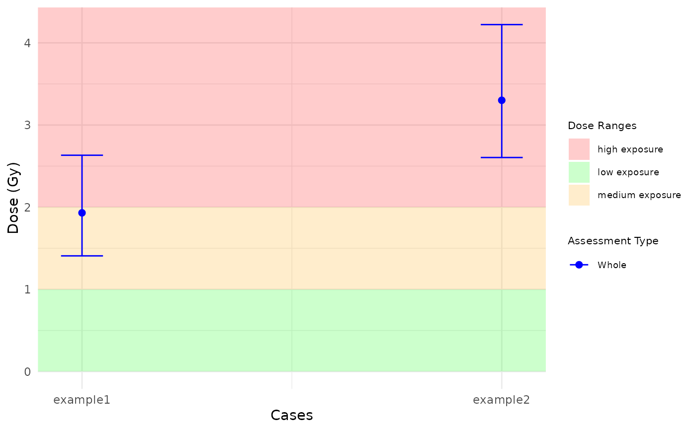

Plot triage
Examples
est_doses_whole <- data.frame(
ID = c("example1", "example2"),
lower = c(1.407921, 2.604542),
estimate = c(1.931245, 3.301014),
upper = c(2.632199, 4.221749)
)
plot_triage(
num_cases = 2,
est_doses_whole ,
est_doses_partial = NULL,
assessment = "whole",
place = "UI"
)
